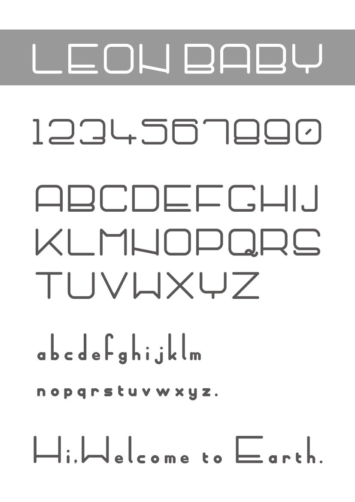
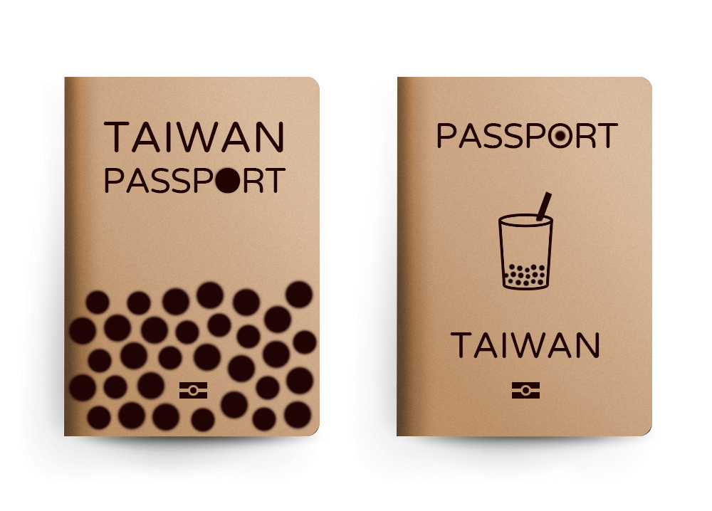
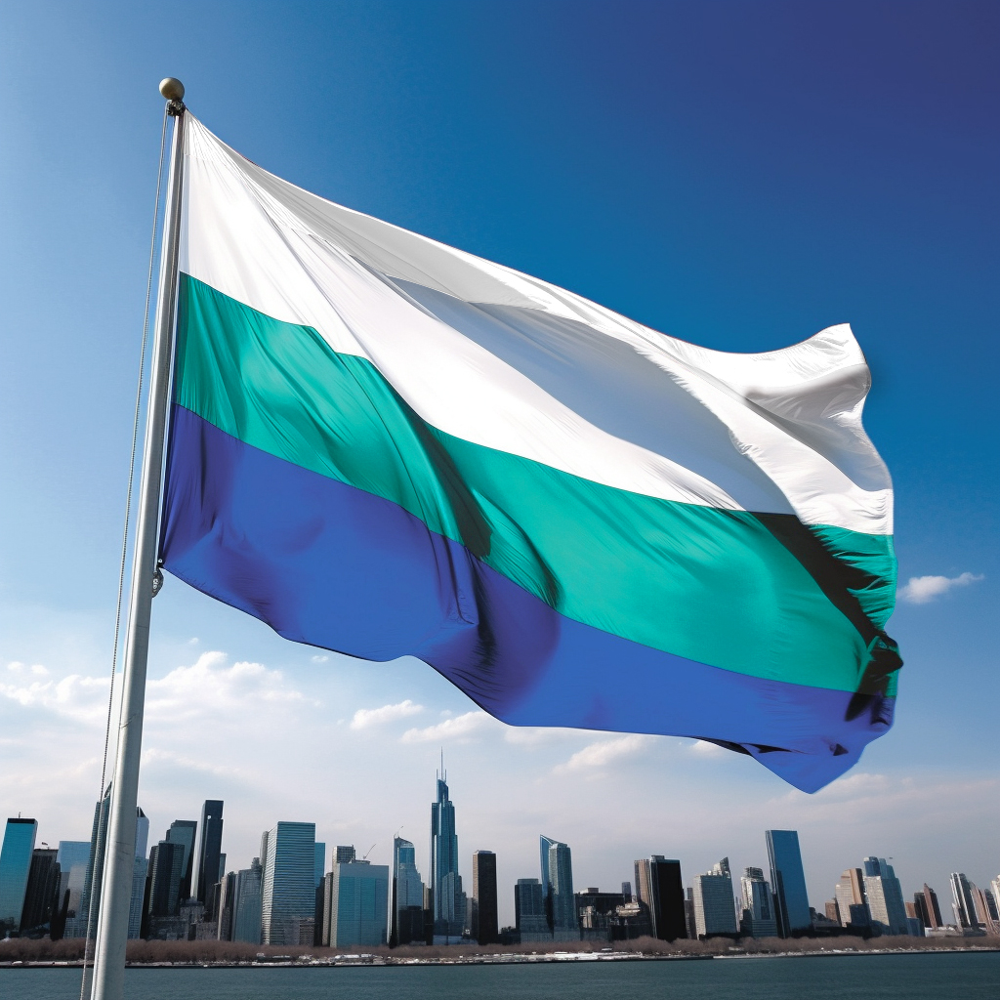
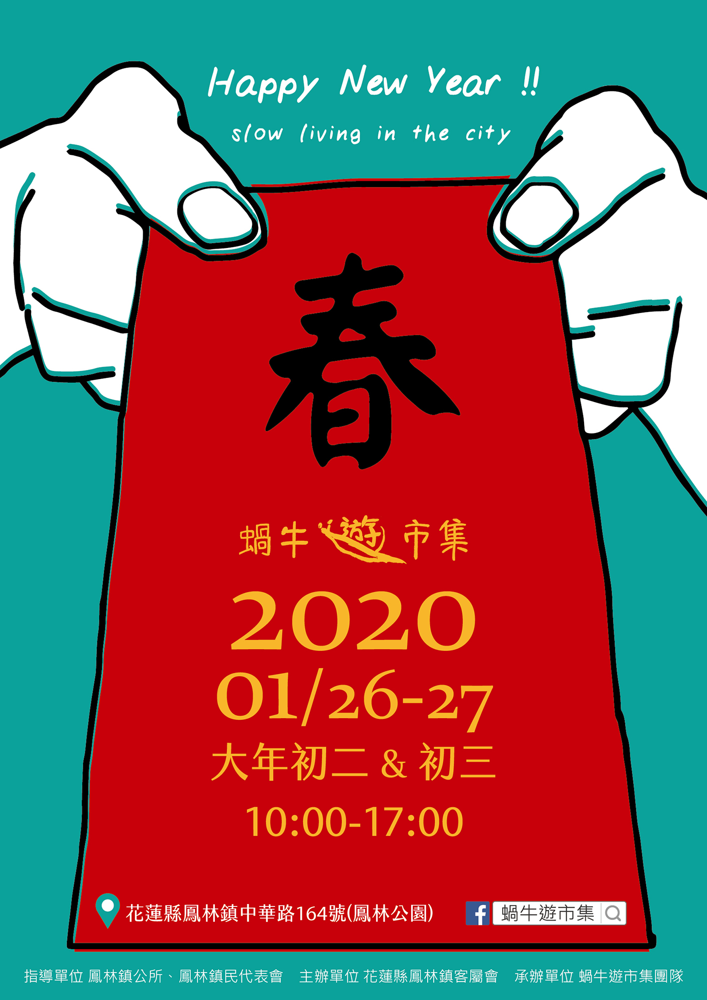
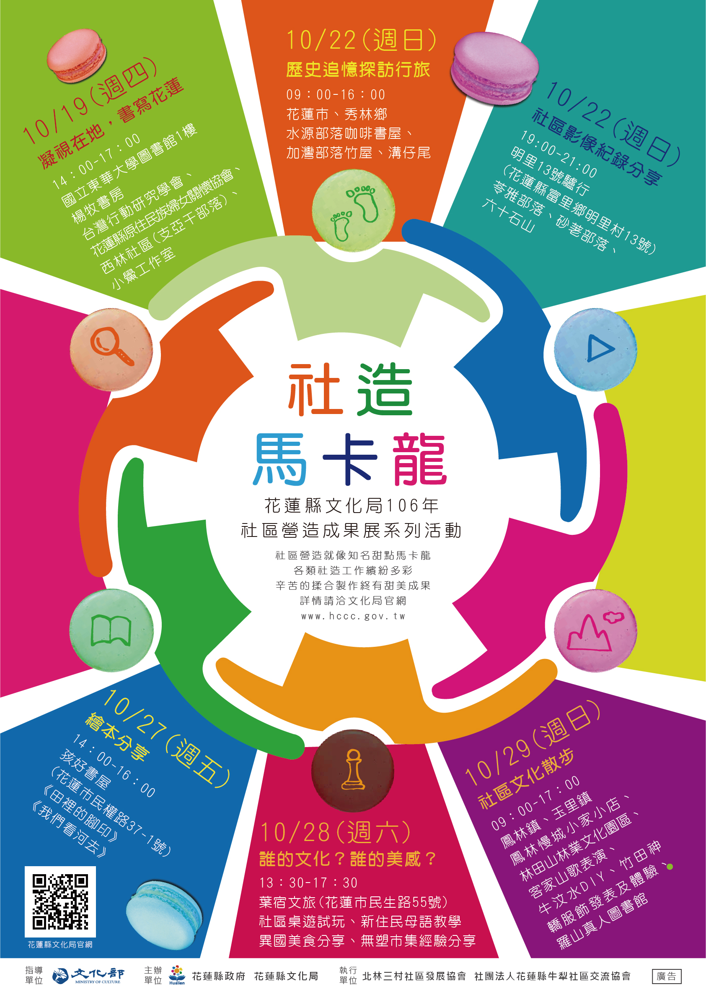
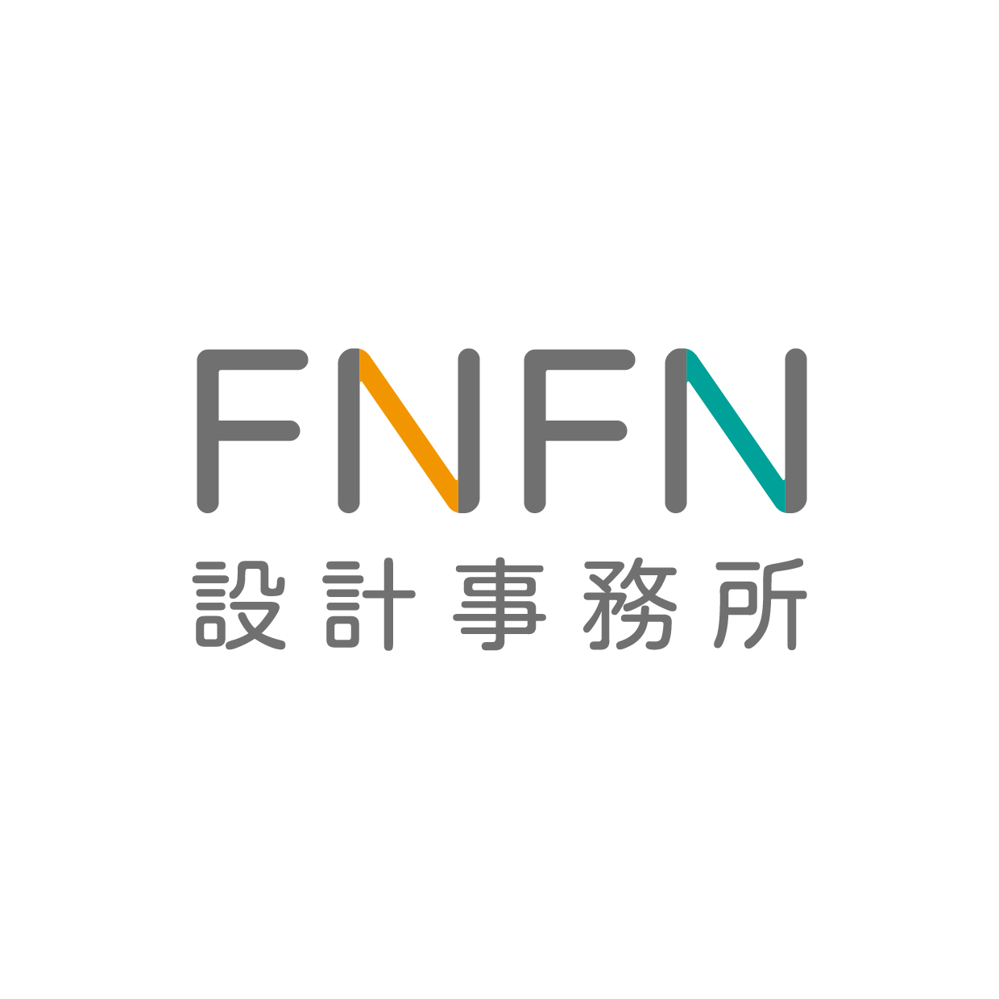
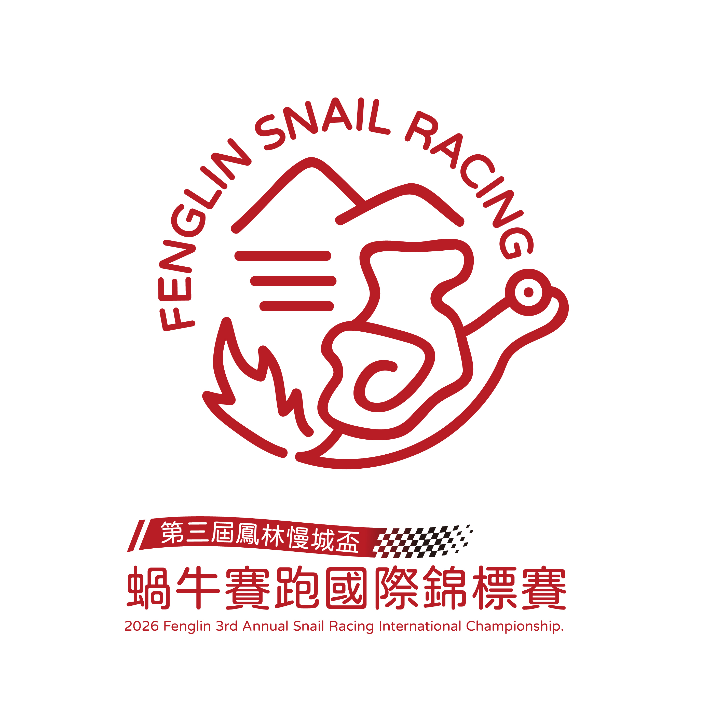
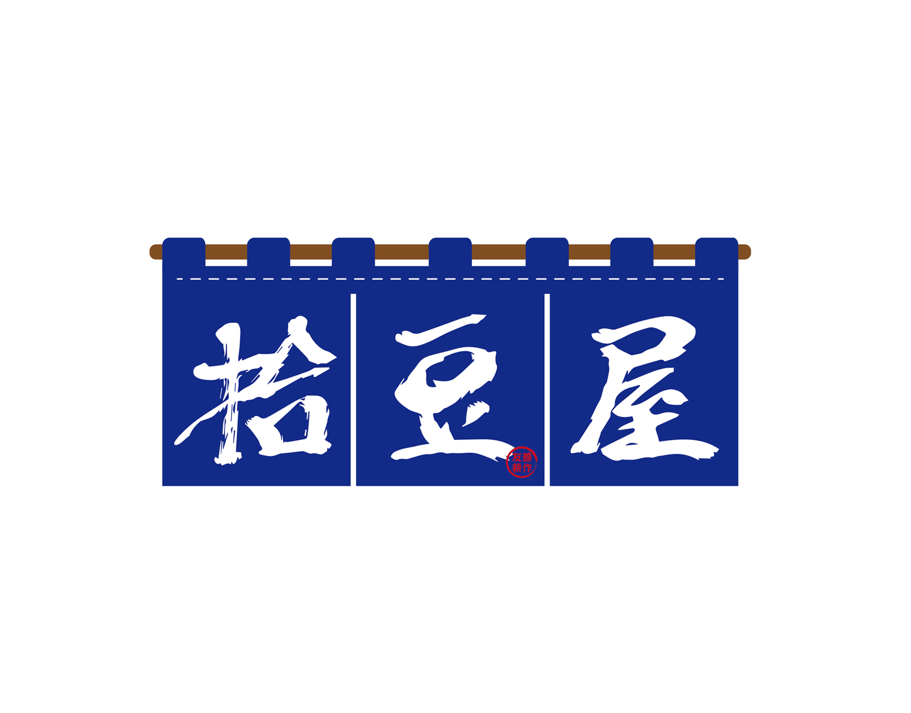

精選作品
往下瀏覽專案，點擊觀看完整設計內容

字型設計
2025兒子來到地球的第一年，我把你的可愛，作成了字體。以嬰兒「頭大、身體小」的比例為靈感，設計了一套英文字形，名字源自兒子的英文名 Leon，紀念我們一起長大的第一年。一份送給兒子的生日禮物，也想分享給世界。
觀看內容
珍珠奶茶護照設計
原本護照套上的 (Republic of China) 字樣，很容易讓我們在國外旅遊時被誤認為中國人，會發生一些不必要的誤會，所以我設計的護照上就拿掉了這行文字，只留下 Taiwan字樣。在想封面的時候，腦中有想過一些元素是可以拿來代表台灣的東西，例如原住民的圖騰、台灣的宗教信仰…等，但如果用了這些元素，就會侷限了某種族或宗教而代表性不足。後來我想到珍珠奶茶這個台灣在地的平民美食，是外國朋友來都一定帶他們喝的飲料，都得到很好的回饋，民以食為天，吃的東西是最貼近生活文化，珍珠奶茶這個台灣代表性很高的飲料，拿來當作台灣護照封面，打破了種族、宗教、地區、甚至國界，又可以宣傳台灣。
觀看內容
2023 FAPA TAIWAN FLAG DESIGN
榮獲第三名。以現代簡約風格與台灣核心意象重新解構、設計的旗幟視覺。從15世紀大航海時代開始，葡萄牙人遠渡重洋在太平洋上看見美麗的台灣而喊出Formosa，讓台灣漸漸在國際上嶄露頭角，藍色代表的是太平洋，綠色代表著台灣島嶼上百岳山脈與自然環境，而白色是由七種色光所疊合而成，象徵著台灣島上豐富的多元文化在此地共榮共存共好著。
觀看內容
市集海報設計規劃
為市集打造完整的品牌視覺包含Logo、標準字與應用物設計。
觀看內容
活動海報設計規劃
為不同日期不同主題的社造成果展，打造同視覺海報，提升整體感。
觀看內容
Logo設計
品牌識別（Brand Identity）簡單來說，就是品牌在社會大眾面前所展現的「長相」與「個性」。如果把品牌比喻成一個人，他的名字、穿衣風格、說話語氣和行為舉止，就構成了他的個人特質；而品牌識別就是透過文字、色彩、標誌（Logo）和視覺系統，把企業的核心理念具體化，讓消費者一眼就能認出、並記住這個品牌。
觀看內容
活動視覺設計
活動視覺設計（Key Visual, KV）是一場活動的靈魂，透過色彩、字體、圖像與排版，將核心精神轉化為受眾有感的視覺識別。它不僅是一張單一海報，更是一套能全面應用於實體與數位平台的視覺系統
觀看內容
企業視覺設計
品牌形象設計是透過視覺、語言與商業策略的整合，賦予企業或產品獨特的人格與價值觀。它不僅僅是一個 Logo，更是與消費者溝通的橋樑，協助企業在市場中脫穎而出，建立長期的品牌信任感與辨識度。
觀看內容個人經歷
我過去幾年的職業生涯與成長軌跡
鳳仁國小
2018 - 2026代課、代理教師
- 科任、班級導師
- 資訊、網管業務負責人
- 校園數位教育推動
合作教師
2019 - 2020教育部數位機會中心DOC
- 3D列印
- 雷射雕刻、切割
花蓮文化局社區營造輔導團
2017 - 2018北林三村社區發展協會
- 社區踏訪、協助
- 公部門資源媒合
- 活動宣傳平面設計
- 協會與縣府之間溝通
視覺工程師
2011 - 2016由田新技股份有限公司
- 企業VIS形象規劃
- 展覽文宣、印刷物設計
- 系統操作介面設計
- 3D工業繪圖
平面設計師
2009 - 2011Trustview優碩資訊
- 企業VIS形象規劃
- 展覽文宣、印刷物設計
- 官網規劃設計
- 軟體介面設計
- 電子報設計、發送
平面設計師
2008 - 2009IFA 英方企業
- 企業VIS形象規劃
- 簡報製圖
- 官網規劃設計
- 環境指標設計
關於我
- 1984.02.03 水瓶座
- 1999-2002 國立花蓮高工 資訊科
- 2002-2008 樹德科技大學 電腦與通訊系 視覺傳達設計系 雙主修
- 2020 珍珠奶茶護照設計
- 2023 FAPA TAIWAN FLAG DESIGN 第三名
擁有超過 10年平面設計經驗，熟悉現代化的數位工具。
除了平面設計，我也熱愛創作、攝影、3D列印、雷射切割、迷因…
視覺設計
Graphic design,VIS,
品牌企劃
Brand Planner
核心技能
準備好開始新專案了嗎？
無論是尋求合作、討論技術，或是單純打聲招呼，我的收件匣與社群隨時為您敞開。